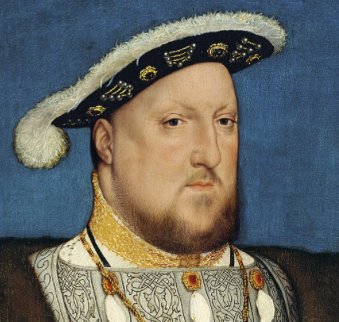

Conditional Probability: Henry VIII

This article analyzes conditional probablilty in the context of the six-player, asymmetric board game Here I Stand (HIS). Each player of HIS has a special way to earn victory points. For instance, the English player gets 5 Victory Points (VP) upon produicing a male heir. Since the first player to 25 VP wins, there is substantial incentive for England to secure the succession.
After playing his home card to persue a wife, the English player rolls a (six-sided) die and consults the Henry's wives' pregnancy chart to see if any children (VP) are born. The English player might be interested in the probability of acquiring a male heir based on the number of rolls. Mathematically, this is the cumulative probability distribution and its calculation is the subject of this article.
HIS captures this drama, by awarding the English player special victory points based on his progeny. Once per turn (HIS has only nine turns), the English player may play his home card to roll a six-sided dice whose results are determined by the following table.
Roll |
Result |
|---|---|
⚅+ |
Success - 5 VP Edward VI becomes Henry's healthy, long-lived heir. If Edward was born on a previous result of 5, this result indicates that he regained his health. |
⚄ |
Partial success - 5 VP a sickley boy is born though the blessed queen dies soon after the birth. Add Mary I to the deck after Edward's succession. Add Edward I on Turn 6, and Mary I to the deck the first turn Edward rules. |
⚃ |
A baby is born - 2 VP but alas, it is a girl. Elizabeth I is added to the the on the first turn after Mary I becomes queen of England. |
⚂ |
Henry's flirtatious, young wife is found cavorting with other men. She is sent to the Tower of London and beheaded. Advance the marital status maker and roll again for another wife. |
⚁ |
The queen is a loving step mother of Henry's children and a nurse to Henry. |
⚀ |
After an arranged marriage, Henry is repulsed once he sees his wife. the marriage is never consumated and divorces follows in 6 months. |
Probability
This problem becomes easier to discuss when we use the right notation. Let's review some probability theory:
Sample space, sample point, event, random variable, complement.
Conditional probability.
A partition.
The probability of an event E conditional on a partition.
The sample space $\Omega$ is the set of all possible outcomes; these outcomes must be mutually exclusive (non-overlapping) and exhaustive (nothing that can happen is left out). The elements of the sample space are the called sample points $\omega$. The sample space is the collection of dice rolls needed for a player to win. Here are some sample points (⚄), (⚁,⚅). Notice that (⚄,⚅) is not in the sample space, because one doesn't continue rolling after you win. Notice that the event of winning on the first roll, $E_1$, contains two sample points: (⚄), (⚅).
The probability of event A is written $$P(A) = N_A/N_{total}$$ where $N_A$ is the number of sample points in A and $N_{total}$ is the total sample points. For example, if event A is rolling a 3 on a pair of dice, then there are 36 elements in the sample space, and two sample points (⚀,⚁) and (⚁,⚀) correspond to a three; thus, $N_A = 2$, $N_{total} = 36$, and $P(A) = 1/18$.
Roll 1
Roll 1 |
$P(start)$ |
$P(E_1|start)$ |
$P(E_1 \cap start)$ |
Win% |
|---|---|---|---|---|
⚄ ⚅ |
1 |
2/6 |
1/3 |
0.333 |
Total |
1/3 |
0.333 |
||
Henry VIII was interested in producing a male heir, so let $E_1$ be winning on Roll 1. This happens by rolling a ⚄ ⚅; therefore, the probability of a male heir being born is $2/6 = 0.333$. The probability of getting to this roll 1, which is 100%; therefore, $P(A) = 1$.
The probability that event $E$ does not happen is $$ P(!E) = 1 - P(E) $$ The probability of getting to Roll 2 is the probability that we do not win on Roll 1: 1 - 2/6 = 0.667.
Roll 2
The game has two rules that make calculating Roll 2 more difficult. First, there is a rule that when a player rerolls a number, he is awarded the next-highest number. Second, Jane Seymour (the second queen) gets +1 added to her roll since she was the mother of Edward VI. This modification accounts for the + in the first row of Table 0.
Roll 1 |
Roll 2 |
P(A) |
P(B|A) |
P(B $\cap$ A) |
Win% |
|---|---|---|---|---|---|
⚀ ⚁ ⚂ ⚃ |
⚃ ⚄ ⚅ |
4/6 |
3/6 |
12/36 |
0.333 |
⚃ |
⚂ |
1/6 |
1/6 |
1/36 |
0.028 |
Total |
13/36 |
13/36 |
0.361 |
||
For simplicity, let's first calculate our probabilities without the Jane Seymore rule. There are three ways to win on Roll 2:
Roll 1 is ⚀ - ⚃ and Roll 2 is ⚅
Roll 1 is ⚀ - ⚃ and Roll 2 is ⚄
Roll 1 is ⚃ and Roll 2 is ⚃.
However, thanks to +1 conferred by Jane Seymore the following paths all lead to a win:
Roll 1 is ⚀ - ⚃ and Roll 2 is ⚅
Roll 1 is ⚀ - ⚃ and Roll 2 is ⚄
Roll 1 is ⚀ - ⚃ and Roll 2 is ⚃
Roll 1 is ⚃ and Roll 2 is ⚂.
We compress the first three bullets into the first row of Table 2, and the fourth bullet gets the second row. One way of thinking about how to calculate the probability is to visualize a grid of the 36-element sample space of two dice. There are four ways (prob = 4/6) to get to this row from Roll 1, and three ways to win on Roll 2 (prob = 3/6). The probability of both these independent events happening is the product of these two probabilities: 4/6 * 3/6 = 12/36.
⚀ ⚀ |
⚀ ⚁ |
⚀ ⚂ |
⚀ ⚃ |
⚀ ⚄ |
⚀ ⚅ |
⚁ ⚀ |
⚁ ⚁ |
⚁ ⚂ |
⚁ ⚃ |
⚁ ⚄ |
⚁ ⚅ |
⚂ ⚀ |
⚂ ⚁ |
⚂ ⚂ |
⚂ ⚃ |
⚂ ⚄ |
⚂ ⚅ |
⚃ ⚀ |
⚃ ⚁ |
⚃ ⚂ |
⚃ ⚃ |
⚃ ⚄ |
⚃ ⚅ |
⚄ ⚀ |
⚄ ⚁ |
⚄ ⚂ |
⚄ ⚃ |
⚄ ⚄ |
⚄ ⚅ |
⚅ ⚀ |
⚅ ⚁ |
⚅ ⚂ |
⚅ ⚃ |
⚅ ⚄ |
⚅ ⚅ |
The second row of Table 2 is much more rare; only one of the 36 sample points corresponding to this event. Calculating the probability of row 2 is done by recognizing that one out of 36 corresponds to 1/36, or multiplyting the probability of the independent events: P(⚃) * P(⚂) = 1/6 * 1/6 = 1/36.
The probability of winning on the second roll is the combination of these two disjoint events. $P(2) = (12 + 1)/36 = 0.361$.
Being able to visualize the entire sample space is intuitive, but as things get more complicated, we need to develop the conditional probability formalism to deal with these doubles rule.
Conditional Probability
Let's take a moment to learn about conditional probability of event B given that event A has occured $$ P(B|A) = \frac{P(B \cap A)}{P(A)} $$ where $P(B|A)$ is read "the probability of B given A," and $P(B \cap A)$ 2 is the probability that both A and B have occured. Rearranging yields $$ P(B \cap A) = P(A) P(B|A). $$
Let's apply this formalism to Roll 2 $$ P(E_2) = P(E_2 \cap !E_1) = P(E_2) P(!E_1) = P(E_2) \big(1 - P(E_1)\big) $$ The probability of winning on Roll 2 is the probability of winning at Roll 2 and we did not win Roll 1. This is not having won Roll 1: $P(!E_1) = 1 - P(E_1) = 1 - 2/6 = 0.667$.
The second term, $P(E_2|!E_1)$ is the probability of winning on Roll 2 given that we didn't win roll 1. As outlined above, this can happen four independent ways; each can be viewed as the probability of getting to Roll 2 times the probability of winning on Roll 2.
The coulumn $P(A)$ in each table is the probability of getting to this roll's win.
For each roll, let event B represent success on this roll and let event A represent the probability of getting to this roll; that is, not having won on any of the previous rolls. The probability of getting to the next roll is the probability of not winning this roll: $$ P(\text{get to next}) = P(\text{not win this roll}) = 1 - P(\text{win|got to this roll}) $$ On Roll 2, we are going to unpack the conditional probability formula.
Roll 3
Roll 3 |
P(A) |
P(B|A) |
P(B $\cap$ A) | Win% |
|
|---|---|---|---|---|
five six |
1 - (2/6 + 13/36) |
2/6 |
12/36 |
0.120 |
four |
2(1/6 * 1) |
1/6 |
2/36 |
0.056 |
three |
$(1/6)^2$ |
1/6 |
1/216 |
0.005 |
Total |
0.181 |
|||
- Roll 3 gives us two creative oportunities to win: double fours and triple threes.
Roll 3 = 5-6
Roll 1 or 2 = 4 AND Roll 3 = 4
Roll 1 and 2 = 3 AND Roll 3 = 3 or 4
The $P(A)$ is the interesting column: the probability of qualifying for this win. The value of $P(A)$ in the first row is the complement of winning Roll 2: $1 - P_2$. There are two ways of making double 4s: getting a 4 on Roll 1 OR a 3+1 on Roll 2. The only way of getting triple threes is rolling: 3, 2+1, and 3.
Roll 4
Roll 4 |
P(A) |
P(B|A) |
P(B $\cap$ A) | Win% |
|
|---|---|---|---|---|
five six |
1 - (0.333 + 0.361 + 0.181) |
2/6 |
12/36 |
0.120 |
four |
3(1/6 * 1) |
1/6 |
2/36 |
0.056 |
three |
$(1/6)^2$ |
1/6 |
1/216 |
0.005 |
two |
$(1/6)^2$ |
1/6 |
1/216 |
0.005 |
Total |
0.181 |
|||
- One can win Roll 4 the following ways:
Roll 4 = 5-6
Roll 1 or 2 or 3 = 4 AND Roll 4 = 4
All but one of the previous rolls were a 3 AND Roll 4 is a 3
Rolls 1-4 are 2s